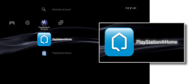

PlayStation®Network > Panoramica di PlayStation®Home
Panoramica di PlayStation®Home
PlayStation®Home è una community di gioco 3D su PlayStation®Network che consente agli utenti del sistema PS3™ di incontrarsi e chattare con altri utenti del sistema PS3™. Per utilizzare queste funzioni è necessario creare (iscrivere) un account PlayStation®Network. Per ulteriori informazioni sull'utilizzo di PlayStation®Home, visitare il sito Web di SCE per la propria regione.
Avvio di PlayStation®Home
Per utilizzare PlayStation®Home, per prima cosa è necessario scaricare e installare l'applicazione PlayStation®Home. Selezionare  (PlayStation®Home) sotto
(PlayStation®Home) sotto  (PlayStation®Network) per scaricare l'applicazione. Per completare l'installazione, seguire le istruzioni sullo schermo.
(PlayStation®Network) per scaricare l'applicazione. Per completare l'installazione, seguire le istruzioni sullo schermo.

Note
- Per installare PlayStation®Home, occorrono almeno 3 GB di spazio libero sul disco rigido del sistema PS3™.
- (PlayStation®Home) è disponibile solo in determinate regioni e lingue. Inoltre, i tipi di contenuti offerti in (PlayStation®Home) variano a seconda del paese o della regione di residenza. Per ulteriori informazioni, rivolgersi alla linea di supporto tecnico per la propria regione.
Uscita da PlayStation®Home
Per uscire da PlayStation®Home, premere il tasto PS sul controller wireless e selezionare  (Esci) sotto (PlayStation®Network).
(Esci) sotto (PlayStation®Network).
Eliminazione di PlayStation®Home
L'applicazione PlayStation®Home può essere eliminata dal disco rigido. Selezionare (PlayStation®Home) sotto (PlayStation®Network), premere il tasto  e quindi selezionare [Elimina] nel menu opzioni.
e quindi selezionare [Elimina] nel menu opzioni.
Nota
Anche se l'applicazione è stata eliminata, l'icona (PlayStation®Home) non viene eliminata dal menu XMB™. Selezionando l'icona, l'applicazione PlayStation®Home viene scaricata di nuovo.